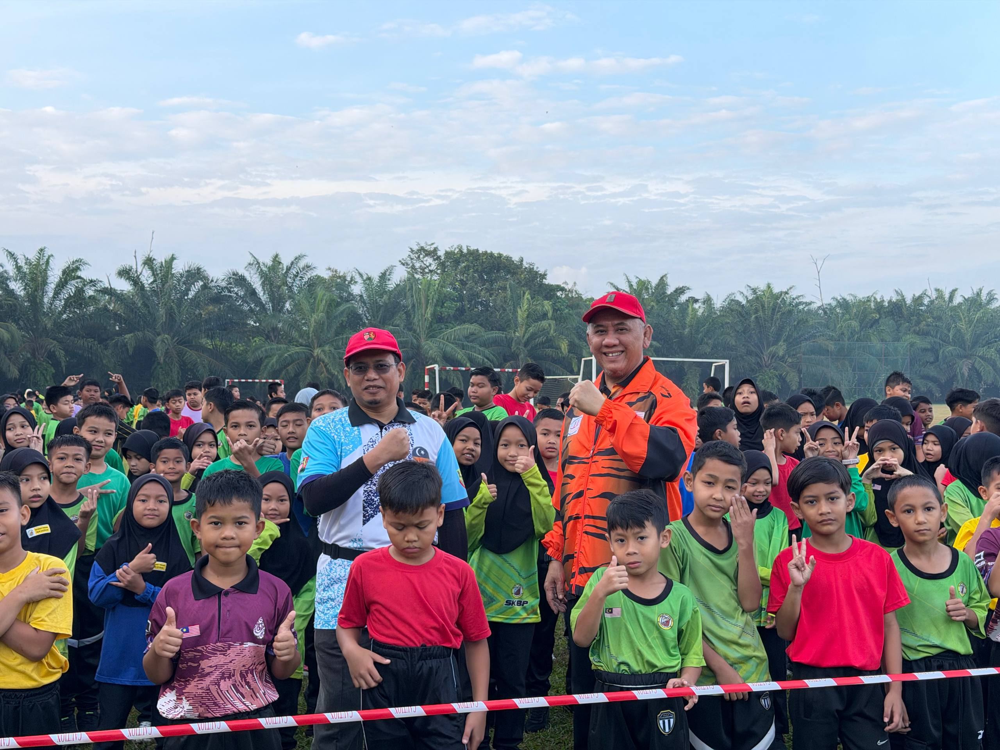

Kurikulum
Pembelajaran berkualiti, inovatif dan berfokuskan kemenjadian murid.
Terokai Kurikulum →Akses pantas ke perkhidmatan dan maklumat sekolah

PROFIL SEKOLAH
SK Bukit Perah komited menyediakan persekitaran pembelajaran yang selamat, kondusif dan progresif untuk membantu setiap murid mencapai potensi terbaik mereka
Dengan sokongan warga sekolah, ibu bapa dan komuniti, SK Bukit Perah terus memperkasa akademik, kokurikulum serta pembentukan sahsiah murid.
PERUTUSAN GURU BESAR
“Kami beriltizam membina generasi yang berilmu, berakhlak dan berdaya saing melalui pendidikan yang menyeluruh serta bermakna.”
Zainudin bin Mohd Ripen
Guru Besar SK Bukit PerahTERAS SEKOLAH
Tiga bidang utama bergerak seiring untuk membentuk murid yang seimbang, aktif dan berdaya saing.
Pembelajaran berkualiti, inovatif dan berfokuskan kemenjadian murid.
Terokai Kurikulum →Kebajikan, disiplin dan sahsiah murid diurus secara sistematik.
Terokai HEM →Potensi kepimpinan, bakat dan kecergasan murid terus diperkasa.
Terokai Kokurikulum →BERITA & AKTIVITI